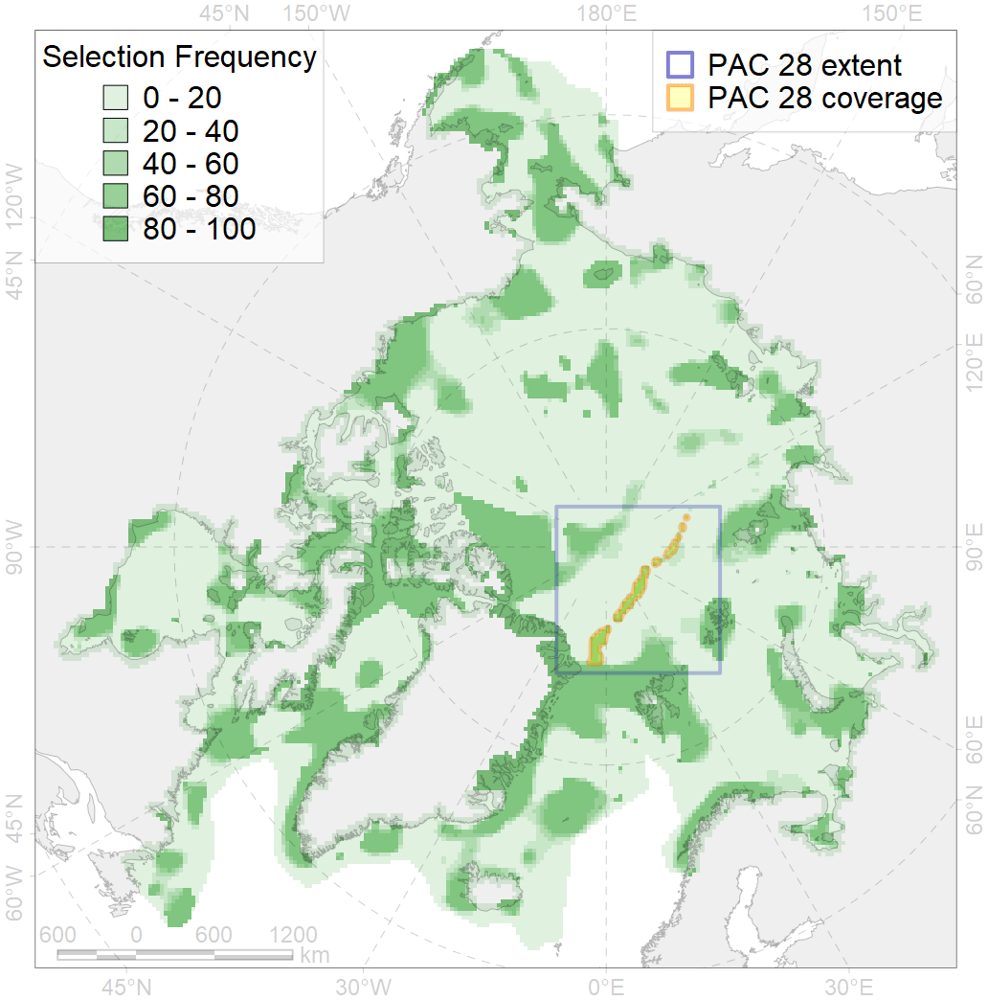
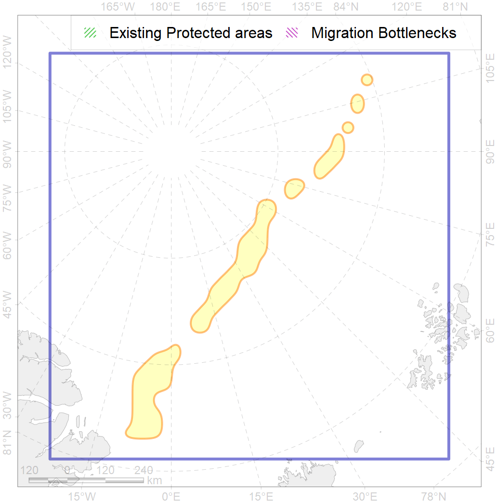

28
For more information regarding this PAC and to conduct custom spatial analysis using the PAC data or any spatial query, please consult Accenter.

3
CFs entirely within the PAC area
12
CFs with a quarter of their amount within the PAC area
10
CFs with their targets achieved in the PAC
13
CFs with at least half of their target achieved in the PAC
| CF | Name | Share of the Total Amount within the PAC | Conservation Target | Share of the Target Achievement for the ArcNet | PAC’s Contribution to the Target Achievement |
|---|---|---|---|---|---|
| 7191 | VI.2.2. Terraces | 100.0% | 100.0% | 100.0% | 100.0% |
| 7059 | central rift mountains of the Gakkel Ridge | 100.0% | 75.0% | 132.7% | 100.0% |
| 7061 | east rift mountains of the Gakkel Ridge | 100.0% | 75.0% | 109.0% | 100.0% |
| 7063 | west rift mountains of the Gakkel Ridge | 98.6% | 75.0% | 130.8% | 99.8% |
| 7057 | vents | 90.9% | 75.0% | 109.3% | 99.9% |
| 7060 | east flank mountains of the Gakkel Ridge | 86.4% | 75.0% | 101.0% | 93.8% |
| 7058 | central flank mountains of the Gakkel Ridge | 82.1% | 75.0% | 102.4% | 96.5% |
| 7062 | west flank mountains of the Gakkel Ridge | 80.8% | 75.0% | 106.6% | 97.0% |
| 7194 | VI.2.6. Rift valleys | 65.2% | 69.0% | 72.9% | 72.7% |
| 7192 | VI.2.3. Ridges | 49.8% | 52.9% | 79.1% | 78.5% |
| 7193 | VI.2.4. Spreading ridges | 38.1% | 28.4% | 102.2% | 65.4% |
| 7178 | VII.2.4. Abyssal mountains | 25.9% | 12.8% | 171.4% | 81.6% |
| 7195 | VI.2.7. Canyons | 14.6% | 100.0% | 14.6% | 14.6% |
| 7017 | Amundsen and Nansen Basins abyssal region | 6.1% | 7.0% | 68.9% | 37.8% |
| 7177 | VII.2.3. Abyssal hills | 3.2% | 8.6% | 20.7% | 19.4% |
| 3049 | Multiyear Ice distribution in September in the Central Arctic LME | 2.4% | 18.0% | 10.6% | 10.5% |